Every building should have a digital twin. Start yours today.
Scan it with an iPhone, trace the floor plan you already have, upload a 3D model from any other tool, or draw it from scratch. Out come dimensioned drawing sets, an interactive twin anyone can open on a link, and data on every object — from one file that can't disagree with itself, and that stays with the building for as long as it stands.
A live link, not a mock-up — the finished building opens in your browser, no account. The modelling tool needs nothing but a browser, and it's opening to accounts shortly. The iPhone scanner is coming to the App Store for anyone who wants to capture their own.
Why buildings lose their information
Buildings are the most valuable things we own, and almost none of them have an accurate, current record of what they are. The way this has always been done doesn't work. Information about a building gets produced in bursts — for a permit, for a sale — and then it goes stale, gets contradicted on site, or simply disappears. Everyone downstream pays for that, forever.
Drawings are incomplete and out of date
A set is drawn for a purpose and a date. Half of what matters was never drawn at all, and the day something changes on site the whole set is quietly wrong — but it stays in the folder, and people keep building from it.
What gets built isn't what was drawn
No building is executed 100% to the drawings. Routes move, dimensions shift, details get solved on the spot. As-builts are the deliverable that most often never arrives — so the gap between paper and reality is never closed.
Renovations are rarely documented
Walls come down, services get rerouted, a bathroom is rebuilt — and nothing is recorded. Twenty years of changes leave no trace, so the next person to touch the building starts by guessing, or by surveying it all over again.
The visuals are made to sell, then thrown away
Floor plans, 3D visualisations, photorealistic renderings — commissioned around a transaction, used for a few months of marketing, then gone. Real money spent on assets that were never connected to the building and were never meant to last.
- Site visits that exist only to measure something that should already be known
- Something ordered, delivered and then found not to fit
- Too much material bought and scrapped, or too little and the job stops
- Surveys paid for twice because nobody kept the first one
- Decisions made from a drawing that stopped being true years ago
Skanna is a different approach to the whole thing. One accurate digital twin per building, made once from whatever you already have, kept current as the building changes, and handed on with the property when it sells. Drawings, visuals, quantities and operations all come out of that single model instead of being commissioned separately and going out of date separately. That is how the waste disappears — and it only works if the record is accurate, live, and in one place. That is what this platform is for.
Four ways to start
All four end at the same model. Only the first one needs a scanner — everything after it, the authoring, the drawings and the twin, happens in a browser tab.
Scan it
Walk the building and get measured geometry, photos and 360° panoramas, all positioned in space. The fastest and most accurate way in — iPhone 12 Pro or later Pro model, iPad Pro 2020 or later.
Trace what you have
A photo of a paper plan, a page from an old PDF, an SVG, or a DXF from an architect. Drop it in as a tracing underlay, set the scale once, and build straight on top of it. DXF arrives at its own real-world scale.
Bring a model you own
Any GLB — from SketchUp, Blender, Revit, a drone survey or another scanning app — loads as a reference to trace, in metres. Existing IFC opens alongside it. Nothing needs converting first.
Draw it from nothing
A tape measure and the plan editor. Walls, openings, slabs, roofs, stairs, services and finishes — no reference of any kind required. Plenty of buildings get modelled exactly this way.
Mix them freely: scan the ground floor, trace the architect's DXF for the first, and draw the loft from a tape measure — it's one model either way. And it doesn't have to be finished to be useful. Start today with whatever you already have, and build on it as you go.
What comes out of it
One model per building, and everything else generated from it. Change the model once and the drawings, the visuals and the data all follow — they're views of the same file, so they can't contradict each other. And the model itself doesn't expire when the project ends: it lives online as the building's permanent record.
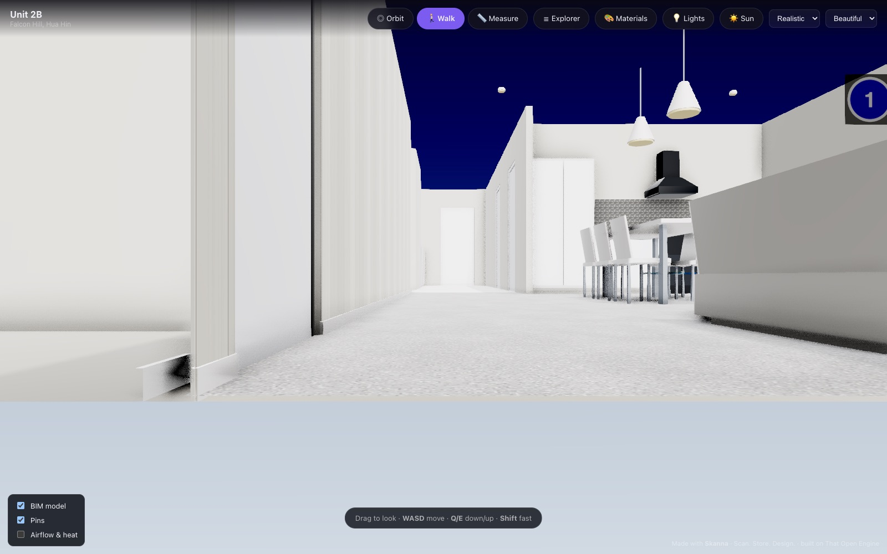
Interactive experiences
The finished building on a URL — no app, no login. Orbit it, walk through it, click anything for its specification, measure any two points. A real sun study on the site's own coordinates, light fixtures that switch on, and — from lists you curate — finishes and furniture the viewer can choose for themselves.
Open a live twin →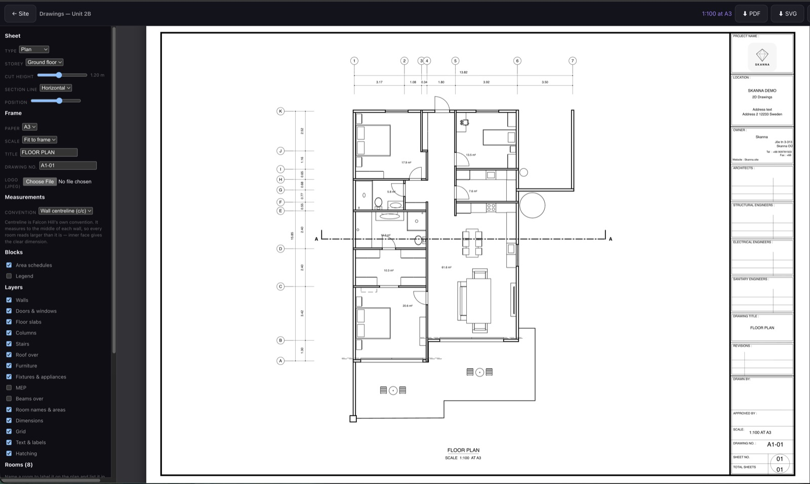
Automatic drawings
Plans, elevations and sections generated onto your own title block, with dimensions, grid bubbles, room schedules and a legend. PDF, SVG or DXF at any standard scale. A revision is a re-issue from the model — minutes, not a redraw.
See a generated sheet →
Visuals & building data
The render is the model — no separate visualisation pipeline and no render budget per campaign. Every wall, opening, fixture and service run carries its real specification, so areas, quantities, schedules and inventory come out of the same file.
See what a twin knows →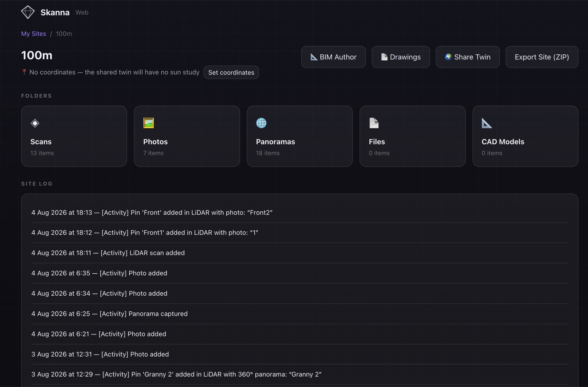
One place where all your buildings live — permanently
Every property you own or manage in a single online portal, each with its twin, its drawings, its documents, its media and a dated log of everything that has ever been done to it. It is not a project folder that closes when the job does: the twin keeps getting updated for as long as the building exists — renovations, replacements, service history, new measurements — so the record never goes stale again. Reach it from any browser, share exactly as much of it as you choose, and hand the digital twin over with the physical property when you sell it, the way keys and deeds change hands. The next owner inherits twenty years of accurate building information instead of starting from a tape measure.
See the property portal →How a building gets there
Four steps, once per building — then it stays alive. We recommend starting with the Skanna scanner: it was developed specifically to capture building sites, not objects or faces, so it gives you true-to-scale geometry, photos and 360° panoramas in one walk-through, and it is by a distance the fastest and most accurate way in. No iPhone, no 3D model and no drawings to hand? It still works — trace a floor-plan image, an SVG or a DXF, or draw the building from scratch with a tape measure. Everything above is an output of the same model.
Scan and collect all data
Walk the building with the scanner and capture the geometry, photos, panoramas and notes in one pass — or, without a scanner, bring the drawing, model or measurements you have. Everything lands on the building's page together.
Model
Trace the scan into walls, slabs, openings, roofs, stairs, MEP and finishes, each carrying its real specification. In a browser.
Publish
Drawing sets on your title block, and the twin on a link. Send either to a buyer, a contractor, a lender or the permit office.
Operate
The model stays alive next to the building — inventory, condition, service history, bookings and renovation progress on the objects — and transfers to the next owner when the property does.
Where you'd start
Everybody gets the same platform — the whole of it. Scanning, browser modelling, drawing sets, the published twin, the property portal and the operations side are one product, not tiers sold to different trades. The only difference between the rows below is which part you'll reach for first; the rest is sitting there waiting, and most people end up using all of it. The sales twin a developer publishes and the maintenance record their operations team works from are the same file.
The Skanna app
Optional, and the best way in if you have the hardware. Skanna turns your iPhone or iPad Pro into a professional LiDAR scanner. Capture dimensionally accurate 3D models of any space in minutes, entirely on your device, entirely private.
LiDAR capture
Scan a space with your iPhone or iPad Pro and build a true-to-scale 3D mesh in real time, with live coverage feedback while you scan.
Instant 3D preview
Your model appears the moment you finish scanning. Processing to a clean white finish or full photo color happens afterwards, in no time.
Measure & annotate
Tap two points to measure distances. Drop numbered pins with notes, photos and panorama domes anywhere on the model.
Store & organize
Save scans, photos, 360° panoramas, and files per property, with a site log, comments and your whole site in one place.
Open exports
Export scans in GLB format, or your whole site as a ZIP bundle with models, photos, panoramas, and pins. Your data is never locked in.
Offline & private
Everything is captured, processed, and stored on your device. No account, no cloud, no tracking. Read the privacy policy.
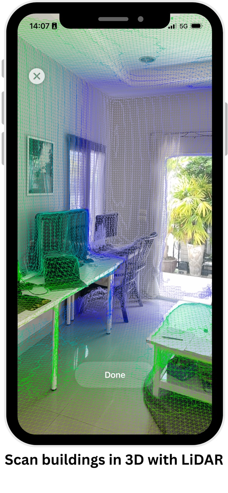
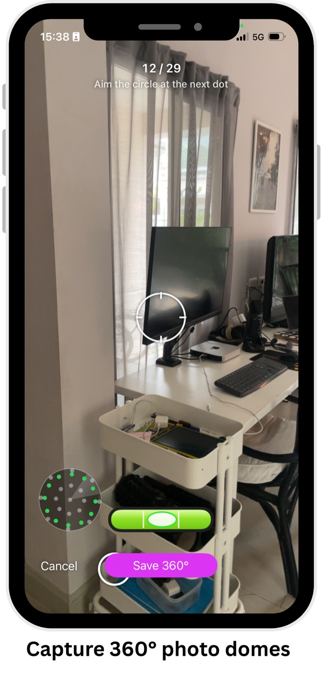
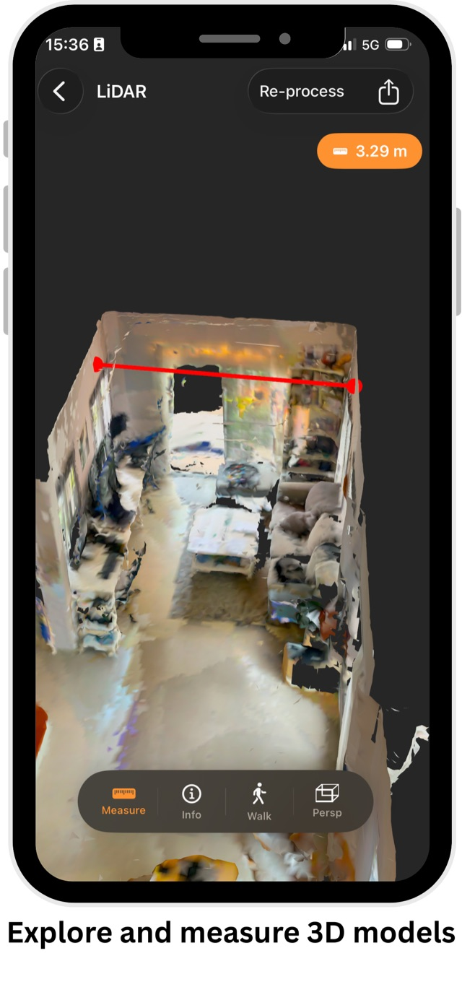
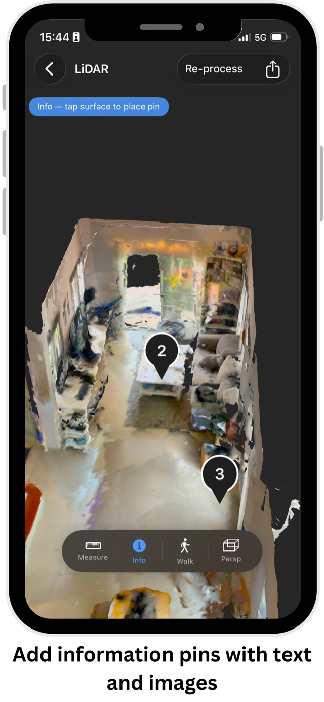
No Pro iPhone? Nothing else on this page needs one — see the four ways to start.
Skanna Web — BIM Author & property portal
Two halves of one product. The BIM Author is an easy-to-use authoring tool that runs entirely in the browser: trace a scan, an old floor plan or a model you already own — or draw from nothing — build a real IFC model floor by floor, and skip the heavy CAD suite. For a large share of properties, Skanna does the job of SketchUp, Blender or Revit, and most people learn it in a day. The property portal is where those models then live: every building you own or manage in one place, online, kept current for as long as the building exists.
Export and build your own solution
Every scan exports as a standard GLB model and every building model as IFC, the ideal format for structured data about buildings. Use them in any tool or platform you like — no conversion, no lock-in.
Keep everything on the Skanna platform
Host your models and data online, work on them from any browser, and share with anyone. If you ever decide to leave, you take all of your data with you.
- 3D viewer — orbit, pan, zoom, and dollhouse view of your scans, right in the browser
- Pins & collaboration — numbered pins on the model with notes, replies, and photos
- Measure — real-world distances on the web model, just like in the app
- 360° panoramas — captured panoramas open in a full spherical viewer, linked to the model
- CAD & IFC viewing — open IFC files alongside or overlaid on your scan
- BIM Author — trace a scan, a floor-plan image, an SVG or DXF, or nothing at all, in a 2D plan editor, and export a real IFC building model floor by floor
- Drawings — plans, elevations and sections generated onto a title block, exported as PDF, SVG or DXF
- Shared digital twin — publish the finished model to a link with sun study, lighting, building services, and curated material and furniture choices the viewer picks from
- Property portal — every building you own or manage on its own page, with folders, documents, media and a dated log of everything that has ever been added
- Operations — inventory, condition, service history and renovation progress recorded on the objects themselves, so the record updates instead of expiring
- Sharing & handover — give a contractor, a buyer or a valuer exactly the access you choose, and pass the whole twin on when the property changes hands

Every surface you draw carries an Offer choices button — that's where the material options further down this page come from. Put every wall of a room in one set and the buyer restyles the room, not a wall.
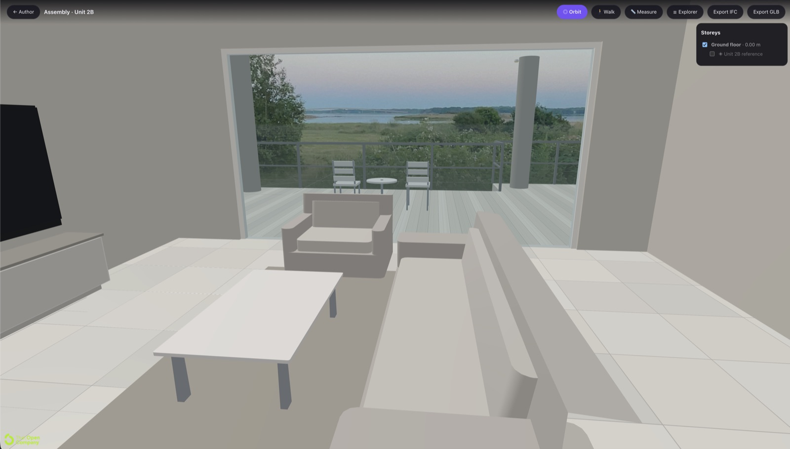
However you started, you end up here: export the finished IFC and open it in SketchUp, Revit, Blender, or your web CAD platform of choice — to plan, design, and extract data — or keep it on the Skanna platform for further development.
The property portal — where the buildings live afterwards
A finished model that sits on somebody's laptop is just another drawing set waiting to go stale. On the portal, each building has a permanent page: its scans, panoramas and photos, its drawing sets, its documents, its published twin, and a dated site log of every scan, pin, comment and change anyone has made. Work on it from any browser, from anywhere, and keep working on it for the life of the building — a renovation, a new service run, a replaced boiler or a fresh scan of one floor updates the same record rather than starting a new one. Then hand it over: the twin transfers with the property, so the next owner inherits the whole history instead of an empty folder. For teams running many units, this is the operations and maintenance system as well — bookings, service jobs and unit records against real geometry, replacing the scattered tools that never talked to each other.
Permit drawings, straight from the model
The model also produces the paper deliverable. Plans, elevations and sections are generated onto a real title block with dimensions, grid bubbles, room schedules and a legend — then exported as PDF, SVG or DXF at any standard scale.
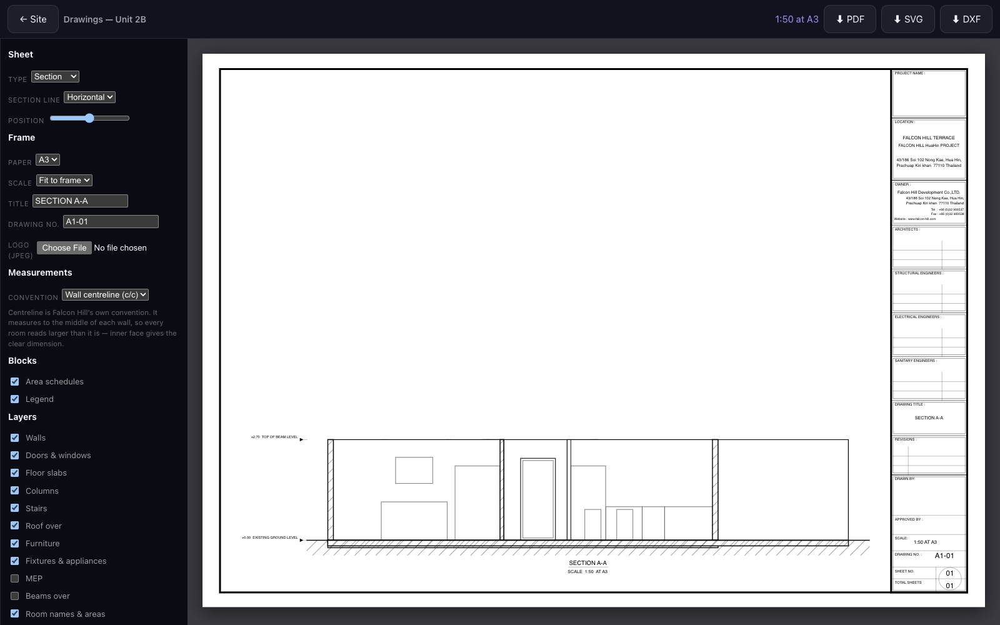
The shared digital twin
When the model is finished, publish it to a link. Anyone you send it to opens a fully rendered building in their browser — no software, no account, no download. They can orbit it, walk through it, click anything for its data, measure it, and see how it behaves through the day.
Sun study
Real solar geometry for the building's own coordinates. Move the time of day and the date and the shadows follow — so a buyer can see which rooms get the morning light and where the terrace is shaded in the afternoon. Times are local solar time, so shadows stay comparable year-round no matter what daylight saving does.
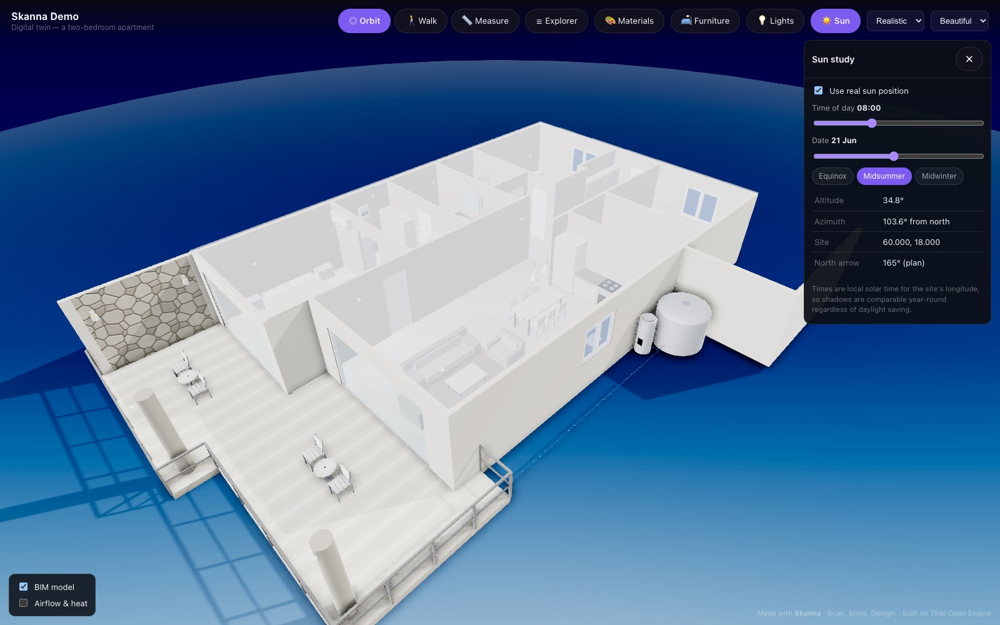
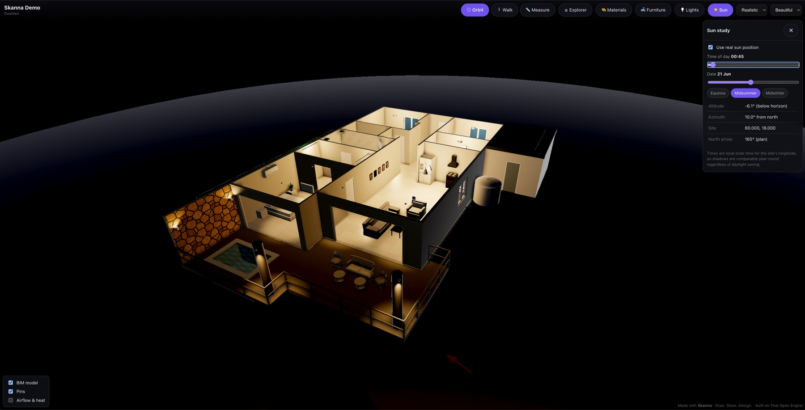
Lighting
Every light fixture in the model is a real emitter — spotlights, ceiling lights, pendants, wall sconces and LED strips, each listed and each with its own switch. Throw them all on or off at once, and set the colour temperature anywhere from warm to daylight. The view at the top of this section is the same building with the fixtures on.
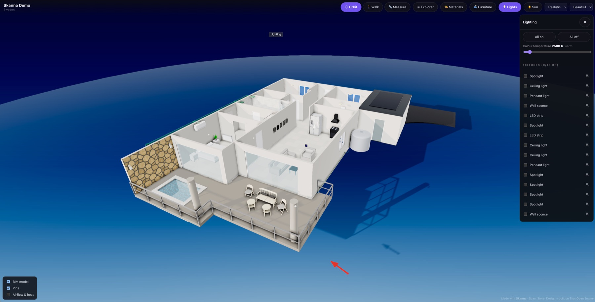
Materials the viewer can change
Click any wall, floor or ceiling and swap what it's made of — painted, wood, tile, stone, brick or concrete — then pick a tone. The change is applied to that surface alone, and one control resets it while another resets everything at once. Whatever they change belongs to them: the published model is never touched. Where you'd rather not leave the whole palette open, you can group the surfaces that change together and publish only the named options you're willing to supply — and one choice then restyles every surface in the group.
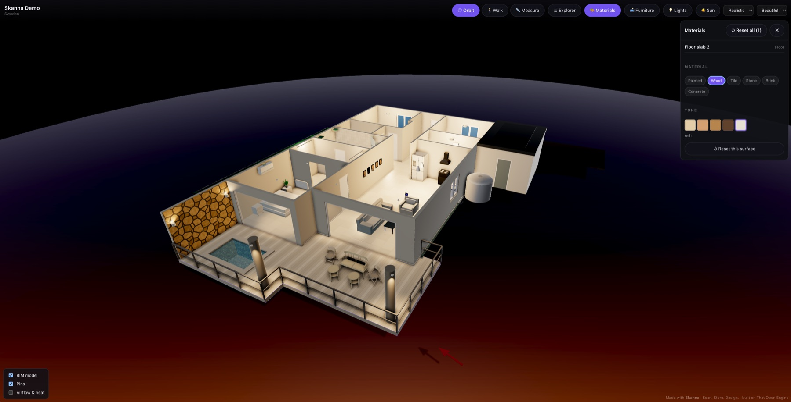
Furniture, appliances and equipment
Furnish the unit from a catalogue of real products at their real dimensions — named manufacturer pieces alongside generic joinery and white goods, every one listed with its footprint in centimetres. Pick an item and the twin tells you what to do with it: click a floor to drop it, or a wall to stand it against, turning it in 45° steps as you go. What they place is theirs alone — your published model is never altered, and one button clears everything they added. Publish the full catalogue, or curate it down to the pieces and sizes you're prepared to supply.
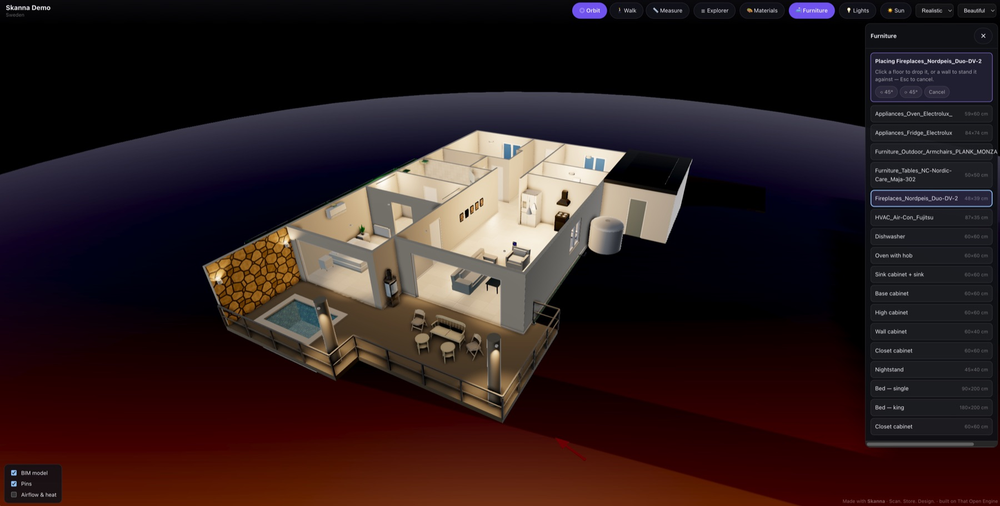
Search it, click it, read its data
Every wall, opening, fixture, appliance and service run is a real object carrying its own specification. Search the model by name to jump straight to one, or just click it: the twin gives you its type, its storey, its dimensions, and whatever properties the model's author attached to it — manufacturer, capacity, serial numbers, service dates, links to the manual.
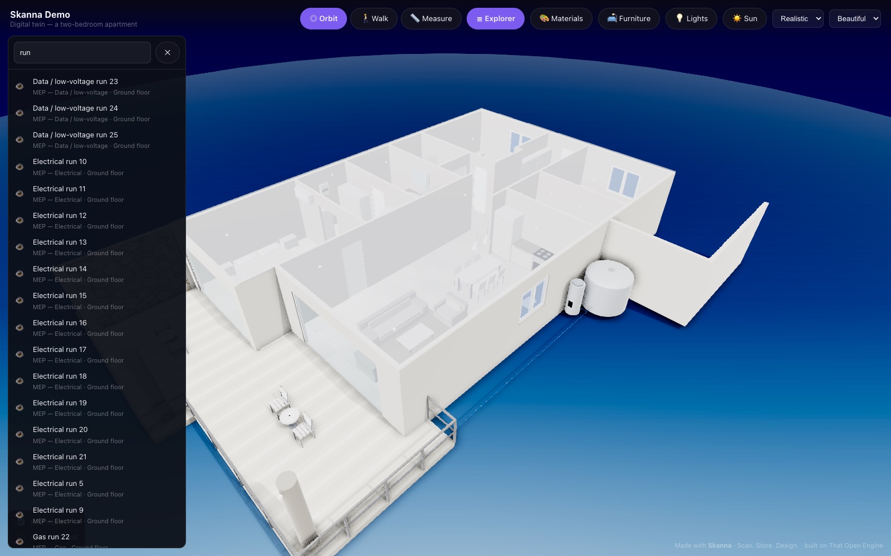
Building services
Ventilation, electrical, water, drainage, gas and data runs are real objects in the model too, each one selectable and listed by discipline. Turn the structure translucent to see all of them at once, or turn on airflow and heat to see, indicatively, where air moves and what warms a room.
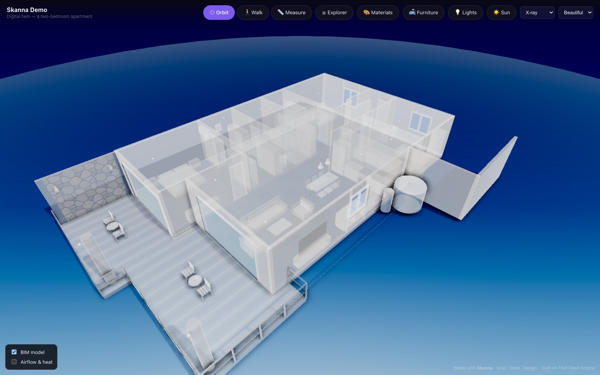
Pins — the detail a model can't hold on its own
Drop a numbered pin on anything that needs more than a specification: a photograph of the consumer unit as it was actually wired, a 360° panorama of the room as built, a note for whoever comes next. The pin sits on the surface it describes, and clicking it opens what you attached.
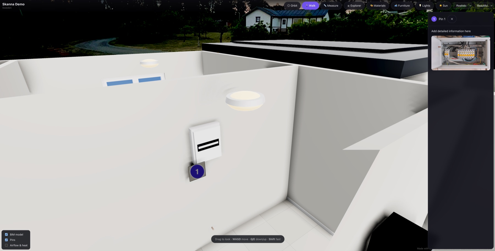
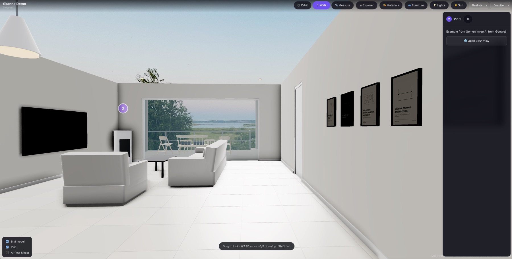
Walk it and measure it
Drop into first person and walk the building at eye height, or stay in orbit and take a dimension off any two points. Switch the whole twin between a realistic render and a clean sketch look, whichever suits who you're showing it to.
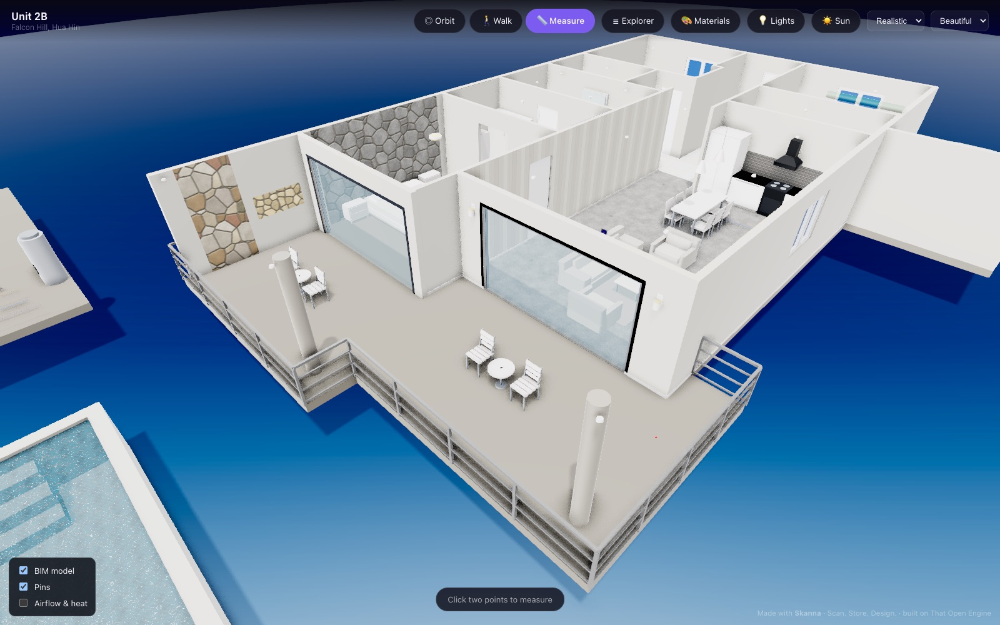
The twin is a link, not an app. Send it to a buyer, a contractor or a lender and it opens on their phone or laptop exactly as you published it.
How pricing works
Start free, pay only when Skanna starts doing real work for you — at a fraction of the cost of a traditional CAD license.
Capture
The full scanner, free on the App Store.
- Unlimited scanning
- View, measure and annotate on device
- No account required, fully private
Export
A single one-time purchase unlocks exporting your captures.
- GLB scans and full site ZIP bundles
- Includes 1 month of Skanna Web: BIM Author and online hosting
- Your data is yours, forever
Skanna Web
A low monthly price for the browser platform.
- BIM Author with IFC export
- Drawing sets on your own title block — PDF, SVG, DXF
- Online hosting, and published twins on a link
No scanner? Nothing here needs one — the whole platform runs in a browser. The first ten people who email about access get seven days of it free. Final pricing is announced at launch.
Learn it — the Skanna course
Sign up and learn the entire chain, end to end: walk into a building with a phone, walk out with drawings, a digital twin and a client who pays for it. There is no other platform that covers all of this in one place — no jumping between a scanning app, a CAD suite, a rendering tool and a viewer, no converting formats at every step, no plug-ins, no special installations, no heavy CAD software and no workstation to buy. That is exactly why it can be taught in days rather than years, and why one person can now deliver what used to take three companies.
Scan a building properly
- Planning the route, and preparing a property before you arrive
- Capture technique for interiors, exteriors and the awkward parts
- Panoramas, photos and pins — collecting everything in one visit
Work from drawings you already have
- Using a plan image, PDF page, SVG or DXF as a scaled reference
- Setting scale once, and proving it against a second known dimension
- Modelling a building with no scan and no drawings at all
The browser CAD tool
- Walls, openings, slabs, roofs, stairs, services and finishes
- Tracing a scan into a correct, structured IFC model floor by floor
- Giving every object its real specification, so the data comes free
Getting drawings out
- Plans, elevations and sections onto your own title block
- Dimensions, grid bubbles, room schedules and legends
- Exporting PDF, SVG and DXF at the right scale, and re-issuing revisions
Creating the digital twin
- Publishing to a link, with sun study, lighting and building services
- Curating the material and furniture choices a viewer gets to make
- Making it look good — the difference between a model and a sales tool
Selling the service
- Who actually buys this: developers, owners, operators, agents, architects
- What to charge, how to scope a building, and what a day's work covers
- The pitch that lands — and the demo that closes it
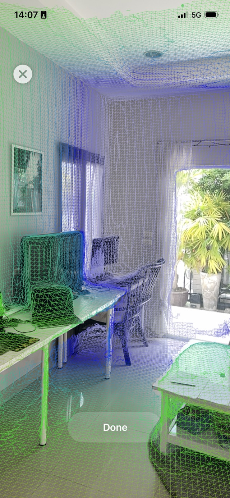
Take the course
Leave your email and I'll send you the enrolment details and the start date. Tell me what you do today and I'll tell you honestly whether this is worth your $209 before you spend it.
Requirements
To model, publish and deliver — a browser. That's the whole list. Skanna Web runs in any modern desktop browser. No install, no CAD seat, no plug-ins.
- Modelling, drawings and the twin — any modern desktop browser. Nothing to install
- Scanning with your own phone — optional — iPhone 12 Pro or later Pro model, or iPad Pro 2020 or later, running iOS 16 or later. Those are the devices with a LiDAR sensor
Scanning is the fastest way to get measured geometry. It is not the way in. The model can start from a floor-plan image, an SVG or DXF, a GLB or IFC you already own, or nothing but a tape measure.
Support & contact
Questions, feedback, or need help with the app? Email anders@skanna.site and you'll get a reply within a few days.
Get access
This is in production, not in beta.
Every part of the chain on this page exists and is being used: the scanner, the browser BIM tool, the drawing generator and the published twin are producing the permit drawings, the models, the buyer walkthroughs and the operations system for a live 100-unit development right now.
Access is opening in stages, so the people already doing this work get in first.
Join the interest list
For anyone who captures, draws or delivers property work today and is tired of paying for three tools that don't talk to each other — surveyors, designers, architects, contractors, agents, developers, fit-out and renovation teams. And owners — if you own the building and want its twin, you're in the right place. You don't need to be in the trade, and you don't need a scanner.
- Replace the capture app, the CAD seat and the delivery pipeline with one chain
- Your models in IFC and your drawings in PDF and DXF, so nothing is trapped
- Start from a scan, an old drawing, a model you already have, or nothing at all — most people are productive in the authoring tool in a day
No account, no card. You'll hear back from me directly with your access window and a date.
Talk partnerships
For manufacturers and suppliers who want their own catalogue inside the model — furniture, materials and finishes, windows, doors, kitchens, sanitaryware, lighting, flooring.
- Your products become placeable objects carrying their real dimensions and specifications
- They appear in front of the person actually choosing, at the moment they choose
- Everything specified flows into the schedules, quantities and drawings automatically
- White-labelling the authoring tool for your own customers
A different conversation from the one above — this one goes straight to me.